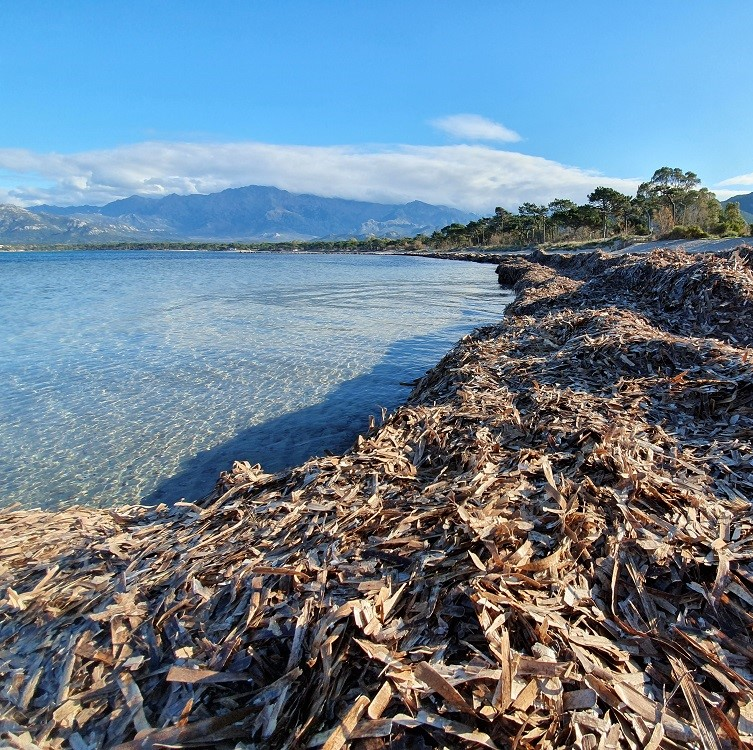

La posidonie est mise en danger par l'acidification des océans, qui
affecte sa croissance et sa reproduction. Cette plante marine est essentielle
pour la biodiversité et agit aussi en régulant le carbone.
L'acidification des océans, causée par l'absorption du dioxyde de
carbone, perturbe profondément la vie marine en modifiant le pH de l'eau.
Cela affecte gravement des espèces comme les coraux, les coquillages et les
plantes marines, qui ont du mal à se développer et à survivre. Cette
transformation menace l'équilibre des écosystèmes marins, la biodiversité
et les moyens de subsistance des communautés côtières dépendant des
ressources maritimes.